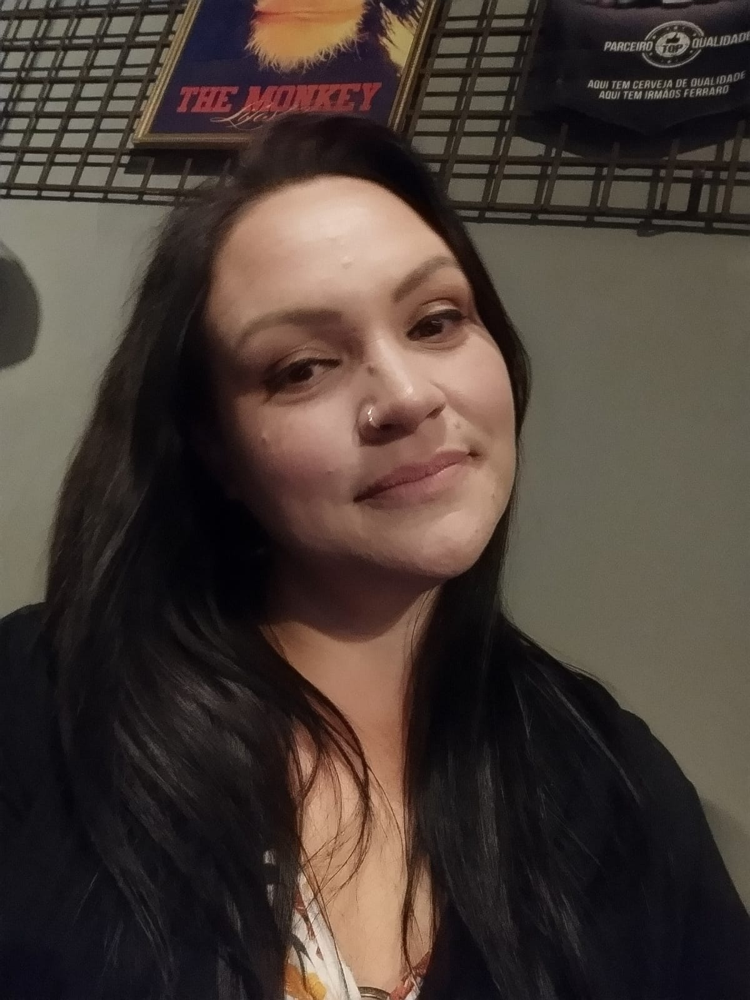
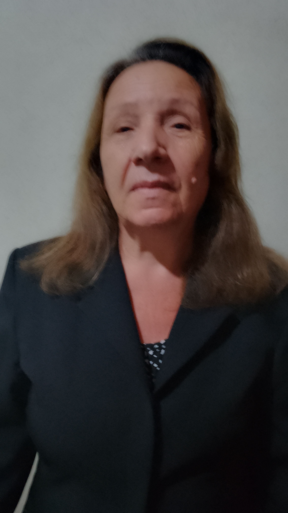

Iuri Macedo:
Iuri é um dos quatro proeminentes pioneiros da organização Vincere Omnia. Ele desempenhou um papel fundamental na seleção perspicaz do design corporativo. Adicionalmente, contribuiu ativamente utilizando seus valiosos contatos pessoais, visando estruturar e efetivar, de maneira abrangente, os ideais compartilhados pela empresa.

Raquel Marcon Macedo:
Raquel, uma contadora talentosa e dedicada, é parte fundamental da empresa de empreendedores na qual trabalha. Com sua mente analítica e habilidades financeiras afiadas, ela desempenha um papel crucial na gestão e controle das finanças do negócio. Sempre atualizada com as regulamentações fiscais e tributárias, Raquel desempenha suas atividades com ética e precisão, garantindo que a empresa esteja em conformidade com todas as obrigações legais. Além disso, ela oferece orientação estratégica aos empreendedores, ajudando-os a tomar decisões financeiras inteligentes e sustentáveis. Sua capacidade de compreender e analisar os números, juntamente com seu comprometimento em fornecer informações valiosas para a tomada de decisões, torna Raquel uma parceira confiável para os empreendedores. Seu trabalho diligente e meticuloso mantém a empresa em trilha para atingir seus objetivos financeiros.
Marilene Marcon Macedo:
Marilene é uma profissional extremamente dedicada e competente que ocupa o cargo de vice-gerente do setor administrativo na empresa de empreendedorismo chamada Vincere Omnia. Sua experiência e conhecimento a tornam essencial para o bom funcionamento da empresa. Com um olhar atento aos detalhes, Marilene supervisiona de perto todas as atividades do setor administrativo, garantindo que os processos sejam eficientes e estejam em conformidade com as políticas da empresa. Sua liderança habilidosa e sua capacidade de organização contribuem para um ambiente de trabalho harmonioso e produtivo. Além disso, Marilene é uma comunicadora eficaz. Ela sabe se expressar de maneira clara e concisa, facilitando a transmissão de informações e a resolução de problemas. Sua habilidade em lidar com clientes e colaboradores é notável, sempre buscando o melhor atendimento e soluções para todas as partes envolvidas.
